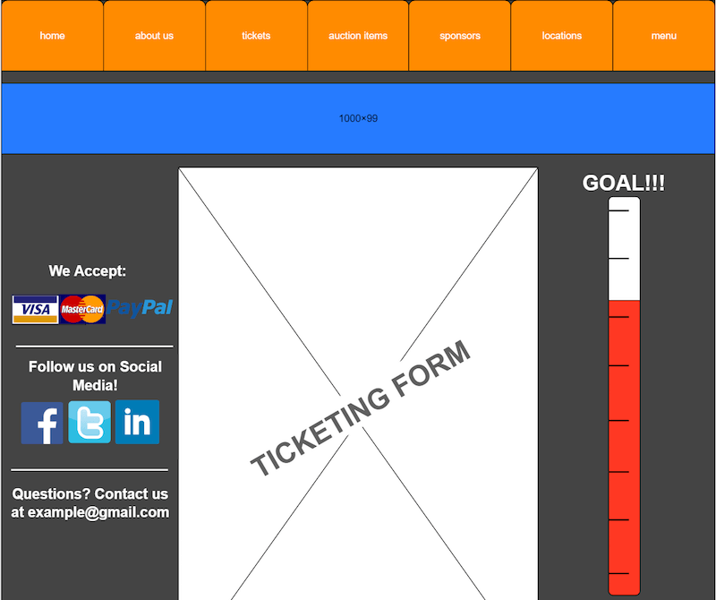
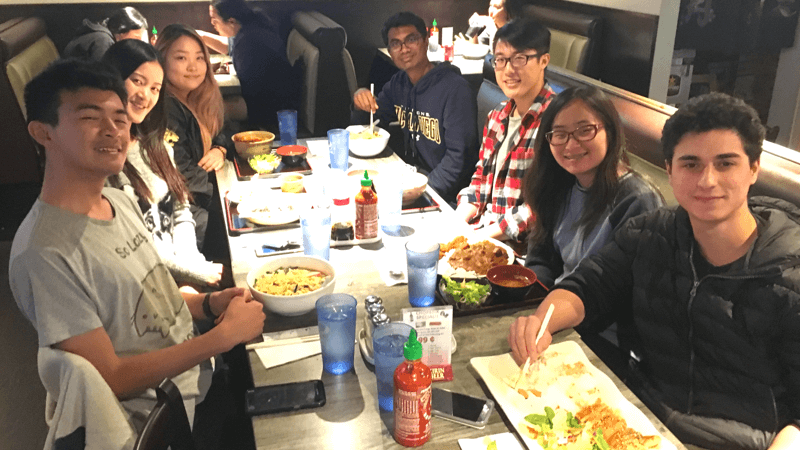
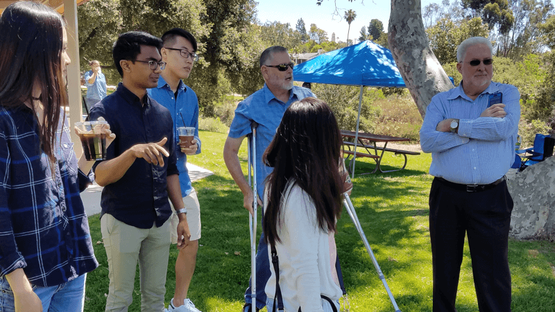

Process
Idea Map


1st Phase
☉ Strategize: Goals & Stakeholders
After deciding which application to redesign, we identified common interests and ideas in reconstructing Spotify’s weaknesses. For instance, the current playlist management function lacks the heuristic principle of user control and freedom, such as deleting songs from and adding songs to a specific playlist. So, we proceeded to work on formulating interview questions and planned to build scenarios from the interviewees.
Current Design
❥ Empathize: User Research
Creating a careful user interview guideline is essential to implement efficiency and good user experience in any design. Individually, we conducted interviews to three users. Initially, they were asked their preferred music applications. Below are some of the questions we asked our users; some questions and tasks were carried out spontaneously throughout the interviewing process.
-
Interview Questions
- How long have you been using this music app?
- Do you use any other music apps other than this one? Which one and why ?
- Is your app updated to the latest version?
- When is the last time you made a playlist?
- What kind of playlists do you have?
- Why did you choose your preferred application? What do you like about this particular service. If they use other applications as well, what were some expectations and familiarities?
- Do you have any suggestions or improvements you recommend?
- What’s a feature that’s missing in your current music app that you wish existed in regards to making/managing playlists?
- Do you hear any new music app from friend/ or anywhere?
From this, we were able to discover intriguing findings, such as the fact that interviewees often do not pay attention to the extensive list of options, and rather, preferred to see clear choices in the form of large tiles (grid) that are seen in other parts of the application. A few even mentioned that they particularly liked the curated aspect of Spotify which made them use it more than other music applications that are often not as personalized (e.g. Soundcloud, Amazon Music). Based on those interviews, we created user scenarios based on 3 aspects: playlist creation, management, and other core activities within the mobile app.
CREATING
- ✦ Generic party playlist
- ✦ Playlist for friend
- ✦ Playlist of new releases
MANAGING
- ✦ Adding songs to existing playlist from EDIT
- ✦ Adding relevant holiday songs from Holiday Playlist
- ✦ Deleting songs frome existing playlist
OTHER
- ✦ Listening to playlist on shuffle
- ✦ Reordering songs in playlist
- ✦ Controlling where to queue a song
-
CREATING
- ✦ Generic party playlist
- ✦ Playlist for friend
- ✦ Playlist of new releases
-
MANAGING
- ✦ Adding songs to existing playlist from EDIT
- ✦ Adding relevant holiday songs from Holiday Playlist
- ✦ Deleting songs frome existing playlist
-
OTHER
- ✦ Listening to playlist on shuffle
- ✦ Reordering songs in playlist
- ✦ Controlling where to queue a song
2nd Phase
✐ Analyze: Competitive Analysis
Since developing user scenarios, our redesign drew on aspects that we found well-designed from other music applications that use playlists. We constructed these ideas from comparing different workflows from those scenarios within different applications, (i.e. matching the playlist workflows from Spotify to those of Apple Music, Soundcloud, and Amazon Music). Thus, we focused mainly on the flow of creating a playlist based on existing playlists.


Also, by analyzing AMC Ticketing Website, Valley View Casino Center Ticket Sales, and Amtrack Ticket Sales in depth, we were able to pinpoint some major pros (insights) and cons (what to avoid) from various competitive ticketing sites.
Strengths
- ✔︎ Modern, diagram-driven interface
- ✔︎ Easy-to-navigate seat selection process
- ✔︎ Use of electronic tickets
- ✔︎ Flexibility of delivery methods and seat suggestions
- ✔︎ Maintaining an email database for announcements
Weaknesses
- ✘ High money & time investment given the constraints
- ✘ Inability to add multiple emails for group tickets
- ✘ Lack of control over ticket sales
- ✘ Inconsistent use of seating charts and diagrams
As a result, for attendees, we needed to make sure to implement a simple, streamlined, and aesthetically pleasing concept. For the managers of the site, we needed to reduce the amount of time they take to manage the site. To do so, we planned to integrate our ticketing site directly into their website, eliminate the problem with the group tickets, and set up an online seating chart.
❂ Design: Wireframing
We used four criteria to decide which concept we would implement in our solution. Affordability was important given that our client is a non-profit and has limited funds to carry out a large event. Usability was another important criteria since we wanted the event-goers to be able to quickly and efficiently purchase their tickets, leading us to make the software as intuitive as possible. Social impact was another one due to the importance of spreading awareness about the Rotary Club and its service activities. Feasibility was the last criteria because of the limited time we were given and the necessity of getting the solution implemented in time for next year's event. With these four criteria in mind, we created two prototypes from existing widgets such as Eventbrite and Universe as well as our own Mock-Up wireframe.

Universe Wireframe

Ground-up Wireframe

Eventbrite Wireframe
3rd Phase
❀ Develop: Iteration & Concept Selection
After testing 3 different prototypes to users, we found that the integrated widget was the most balanced concept and had them most to offer our client. We leaned more towards the Eventbrite widget, since it has a secure, flexible, and large support service and our client expressed his approval for it. Another advantage of choosing the widget as our selected concept was that we can incorporate elements of the ground-up HTML/CSS website into the solution while taking advantage of a trusted service. Though creating it from ground-up would be ideal as it would come as no cost to both our client and the ticket buyers, we concluded that it would not be very feasible due to time and other constraints. After we receieved access to the code for the widget once we selected our layout, we redesigned the user interface of the client’s website to incorporate all required information with brand consistency and the widget at the heart of the page. The webpage also contains an interactive map, showing the location of the concert and the Facebook Page for the event.

❐ Evaluate: Usability Testing
Now that our prototype is in its final stage, we decided to test it out with our client John and the same people we initially interviewed. We had them go through the process of locating the event and purchasing a combination of lawn, table seats, and VIP table tickets. For testing purposes, we made all the tickets free of cost. Due to the request of our client, we decided to not let our buyers select their own seating arrangements, so we were unable to show the user where they will be sitting during the actual event. Thus, we planned to create a seating chart for the venue that corresponds to the seating assignment on each ticket to remedy this problem.
-
Purchase Procedure
- User selects the desired ticket type and quantity on the widget and clicks the “Order Now” button.
- User is redirected to Eventbrite checkout page where they can view the total cost and enter billing and ticket holder information.
- Once the order is placed, the user receives the tickets immediately by email and can either print out tickets or use the Eventbrite app to display their tickets at the venue.
Even though there was minimal testing done on mobile, we went through the process ourselves to work on resolving issues such as difficulty scrolling through ticket options without accidentally scrolling down the website. Since mobile devices are a convenient way for users to show their tickets at the door, we recommended users and the client to utlilize the Eventbrite app to pull up their tickets (QR code) on the phone to scan. Besides the minor issues with the mobile aspect, the main concern that emerged from testing is with the VIP tables. Many users including our client, found it confusing that the only choices for this option were 0 OR 10 tickets. We intended to define 10 as 10 seats at the table, but one of the users mentioned that it would make more sense to count it as 1 ticket for 1 table.
Through many testing and iterations, we found out not only is the VIP table option confusing, but also that during checkout, each ticket asks for a name, email, and mailing address. Users had to tediously fill out this information 10 times under eight minutes, so we kept these concerns in mind as we further refine our prototype.

Example of Printable Ticket
Conclusion
❈ Aftermath
I assisted in coming up with different ideas for our prototypes, sketching and discussing as a group to discover new ideas upon ideas. Because there is no such thing as a perfect prototype, we spent plentiful amount of time deciding and shifting to new improved concepts. By implementing these prototypes and ideas on Sketch and Invision, we were able to produce our final redesigned prototype.
With our design finalized, o

Snippet of User Manual for Client
☾ Final Thoughts
In the beginning of our project, I acted as the User Researcher responsible for conducting interviews and obtaining observations from users who have used various mobile music applications. The three other applications we researched were Apple Music, Soundcloud, and Amazon Music. As part of this project, I also researched the various genres within these mentioned applications, as it was important to see how different applications categorize the variously-named genres (or moods and activities). For instance, Soundcloud only has one set of genres presently divided in two categories, New & Hot chart and Top 50 chart, on the Home screen. On the other hand, Spotify combines Genres and Moods together to provide different playlists within various categories, such as Country, Workout, Focus, and Christian.

Last Team Dinner

Meeting with board member

Field interview with Client (left) and Board Member (right)

Field Research

Team Lunch